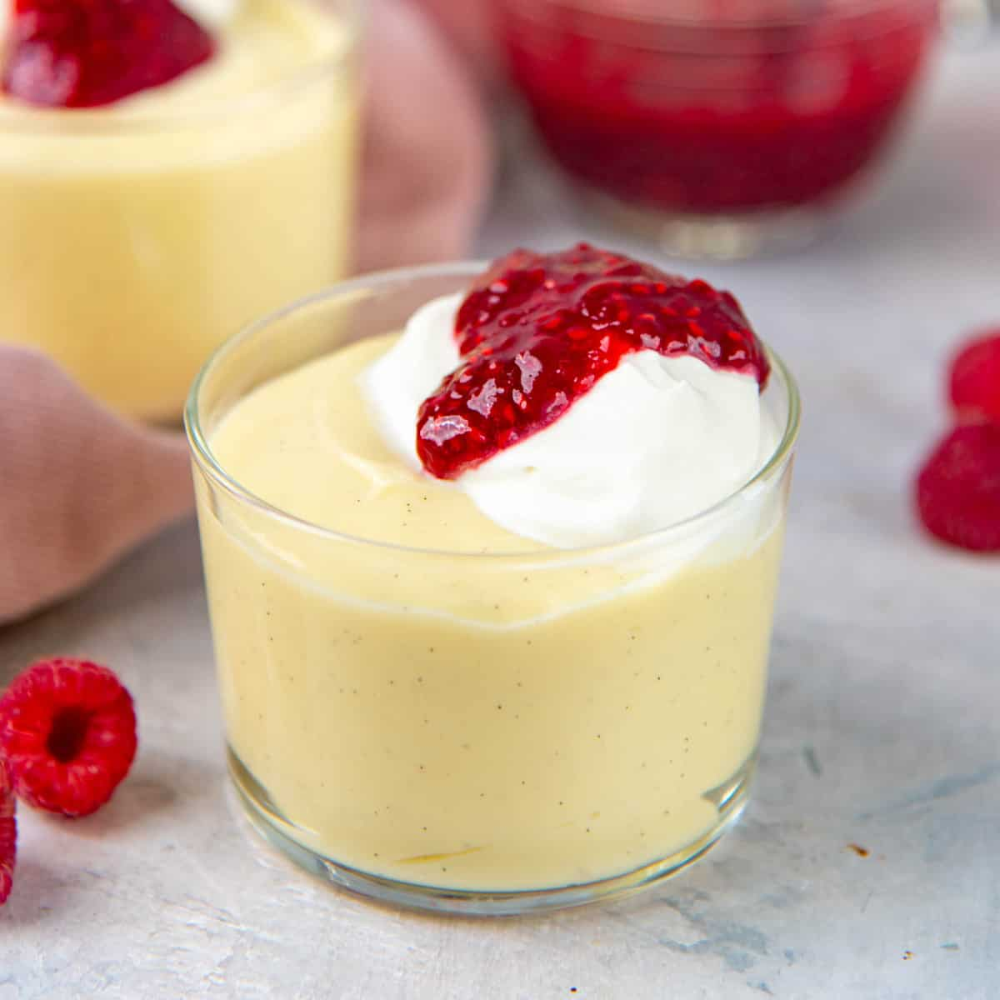

Vanilla Pudding

Description:
Vanilla pudding that can't be beat!
Ingredients
- 1/3 cup white sugar
- 3 tablespoons cornstarch
- 1/4 teaspoon salt
- 2 1/2 cups milk
- 1 1/2 teaspoons vanilla extract
Steps
- In a saucepan, combine the sugar, corn starch and salt. Add milk and cook over medium heat, stirring constantly until mixture thickens. Add vanilla and continue to cook for 2 to 3 minutes.
- Pour into individual molds rinsed with cold water; chill until firm and unmold.
Still got a sweet tooth? Why not try making the following two super easy recipes as well
Poires Au Vin Rouge
Lemon Meringue Pie